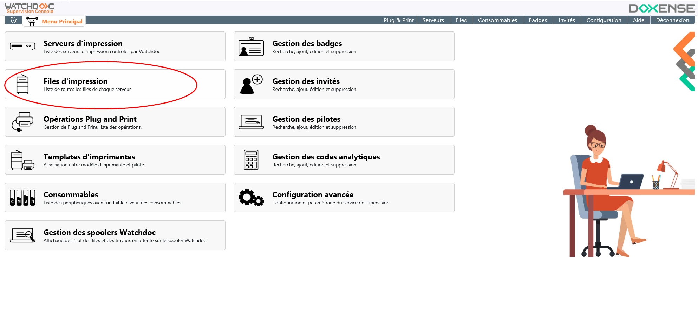
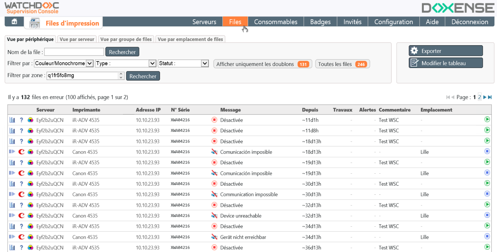
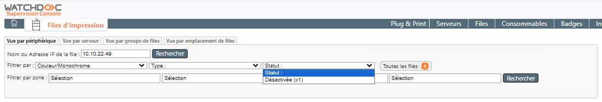
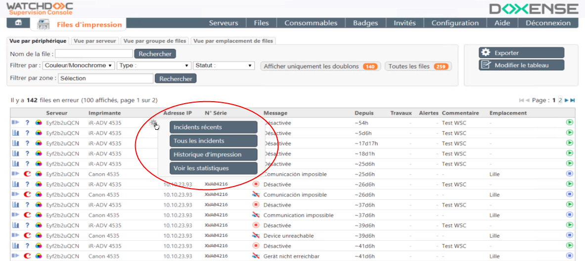
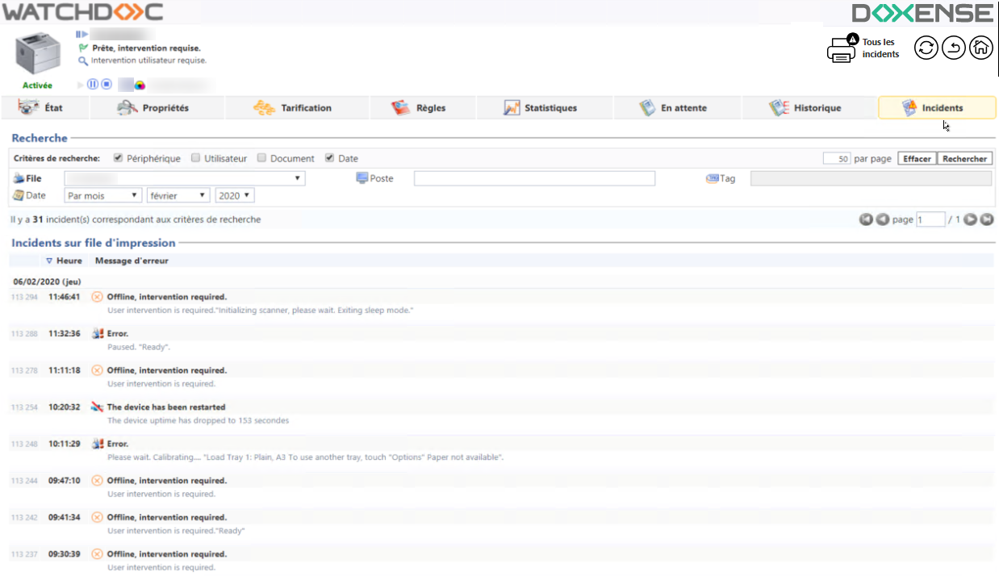

Principe
La Console de Supervision permet d'obtenir des vues détaillées et affinées des files d'impression contrôlées par Watchdoc et notamment les files présentant des dysfonctionnements.
Elle permet aussi d'en créer de nouvelles à partir de modèles, unitairement ou en masse.
Accéder à l'interface de supervision
-
Depuis le Menu principal de WSC, cliquez sur bouton Files d'impression ;

èVous accédez à l'interface Files d'impression, dans laquelle s'affiche la liste des files présentant un dysfonctionnement (indisponible, communication impossible, désactivée, en erreur) :

N.B. : pour accéder à la liste exhaustive des files, cliquez sur le bouton Toutes les files.
Consulter les incidents d'une file
Description de la liste
Dans cette liste, différentes informations relatives aux files d'information sont affichées dans les colonnes suivantes (chaque en-tête de colonne, cliquable, constitue un critère de tri) :
-
colonne Icones : des icones précisent la marque et la configuration de la file :
-
file en mode validation ;
-
file en mode comptabilisation ;
-
logo de la marque constructeur ;
-
 file noir et blanc ;
file noir et blanc ; -
file couleur.
-
-
Serveur : affiche le nom du serveur dont dépend la file ;
-
Imprimante : affiche le nom du périphérique ;
-
Adresse IP : adresse IP de l’imprimante.
-
N° Série : indique le n° de série du périphérique ;
-
Message : affiche le message d'erreur relatif à la file, tel que renvoyé par le périphérique à Watchdoc :
-
Communication impossible : l’alias DNS existe mais l’imprimante de répond pas ;
-
Indisponible : l’alias DNS n’existe pas ;
-
Bourrage papier… Plus de papier… Plus d’encre… : l'un des consommables empêche le bon fonctionnement du périphérique.
-
Depuis : indique, en jours et en heure, le temps écoulé depuis le début du dysfonctionnement ;
-
Travaux : indique le nombre de travaux d'impression concernés par la panne du périphérique et bloqués en attendant le dépannage ;
-
Alertes : nombre d'alertes automatiques envoyées par mail ;
-
Commentaire : information complémentaire relative à la file en panne ;
-
Emplacement : emplacement physique du périphérique ;
-
Wes : identifiant du WES associé à la file.
Des outils permettent de mettre la file en pause :
-
désactivation : la file ne fonctionne plus et tous les travaux qui lui sont envoyés sont bloqués ;
-
réactivation : la file est remise en fonctionnement.
Outils de recherche
Vous disposez de différents outils permettant d'affiner la consultation :
-
un moteur offrant une recherche par nom de file (contenant la chaîne de caractères saisie) ou par adresse IP (depuis WSC 6.0.4470) ;
-
différents filtres permettant de sélectionner les files en fonction de leurs caractéristiques et/ou de leur statut et/ou de leur emplacement :

Procédure de consultation
Depuis la liste des files d'impression :
-
à l'aide du moteur de recherche et/ou filtres, sélectionnez la file dont vous souhaitez consulter l'activité ;
-
dans la liste des files en erreur affichée, cliquez sur le bouton pour accéder au menu des actions : toutes ces actions de supervision des files envoient vers l'interface d'administration de Watchdoc :
-
cliquez sur l'un des boutons d'action :

-
bouton Incidents récents renvoie à la liste des incidents au cours du mois précédant la date courante ;
-
bouton Tous les incidents renvoie à la liste de tous les incidents, sans restriction de date ;
-
bouton Historique d'impression envoie à l'historique des travaux imprimés sur la file (avec ou sans incident) ;
-
bouton Voir les statistiques renvoie aux statistiques des travaux d'impressions réalisés sur la file.
èvous accédez à l'interface d'administration de Watchdoc : authentifiez-vous comme administrateur pour y consulter le détail des informations relatives à la file :
